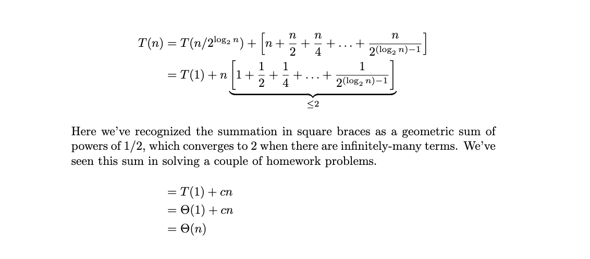
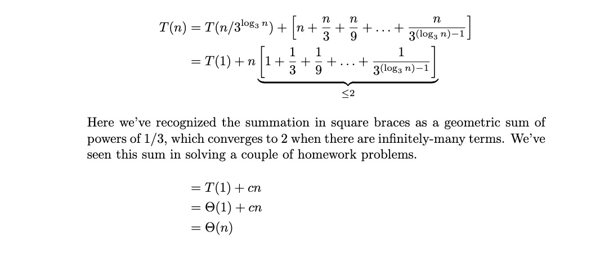

Problems tagged with "recurrence relations"
Problem #011
Tags: recurrence relations
State (but do not solve) the recurrence describing the run time of the following code, assuming that the input, arr, is a list of size \(n\).
def foo(arr, stop=None):
if stop is None:
stop = len(arr) - 1
if stop < 0:
return 1
last = arr[stop]
return last * foo(arr, stop - 1)
Solution
\(T(n) = T(n-1) + \Theta(1)\)
Problem #012
Tags: recurrence relations
What is the solution of the below recurrence? State your answer using asymptotic notation as a function of \(n\).
Solution
\(\Theta(n \log n)\)
Problem #028
Tags: recurrence relations
State (but do not solve) the recurrence describing the runtime of the following function.
def foo(n):
if n < 10:
print("Hello world.")
return
for i in range(n):
print(i)
for i in range(6):
foo(n//3)
Solution
\(T(n) = 6 T(n/3) + \Theta(n)\).
Problem #044
Tags: recurrence relations
Solve the below recurrence, stating the solution in asymptotic notation. Show your work.
Solution
\(\Theta(n)\).
We'll unroll several times:
The pattern seems to be that on the \(k\)th unroll:
The base case is reached when \(k = \log_4 n\). Plugging this back in, we find:
If you reached this point, you got most of the credit. If you're unsure of what to do with \(2^{\log_4 n}\), there are a couple of ways foward.
The first (and easiest) way is to realize that \(2^{\log_4 n}\) is smaller than \(2^{\log_2 n} = n\), so \(2^{\log_4 n} = O(n)\). Similarly, we've seen the summation of \(1 + 1/2 + 1/4 + \ldots\) several times -- this is a geometric sum, and converges to 2 when there are infinitely many terms. There are a finite number of terms here, so the sum is \(< 2\). Altogether, we have:
The second approach is to remember log properties to simplify \(2^{\log_4 n}\) to \(\sqrt{n}\). This can be seen by using the ``change of base'' formula:
In this case:
And therefore \(2^{\log_4 n} = 2^{(\log_2 n) / 2} = \left(2^{\log_2 n}\right)^{1/2} = n^{1/2} = \sqrt n\). This shows that the first term in the recurrence is \(\Theta(\sqrt n)\). The second term is still \(\Theta(n)\), so the solution is \(\Theta(n)\).
Problem #056
Tags: recurrence relations
State (but do not solve) the recurrence describing the runtime of the following function.
def foo(n):
if n < 1:
return 0
for i in range(n**2):
print("here")
foo(n/2)
Solution
\( T(n) = \begin{cases} \Theta(1), & n = 1\\ T(n/2) + \Theta(n^2)% , & n > 1 \end{cases}\)
Problem #068
Tags: recurrence relations, mergesort
Consider the modification of mergesort shown below, where one of the recursive calls has been replaced by an in-place version of selection_sort. Recall that selection_sort takes \(\Theta(n^2)\) time.
def kinda_mergesort(arr):
"""Sort array in-place."""
if len(arr) > 1:
middle = math.floor(len(arr) / 2)
left = arr[:middle]
right = arr[middle:]
mergesort(left)
selection_sort(right)
merge(left, right, arr)
What is the time complexity of kinda_mergesort?
Solution
\(\Theta(n^2)\)
Problem #071
Tags: recurrence relations
Solve the below recurrence, stating the solution in asymptotic notation. Show your work.
Solution
\(\Theta(n)\).
Unrolling several times, we find:
On the \(k\)th unroll, we'll get:
It will take \(\log_2 n\) unrolls to each the base case. Substituting this for \(k\), we get:
Problem #082
Tags: recurrence relations
Solve the recurrence below, stating the solution in asymptotic notation. Show your work.
Solution
\(\Theta(n)\)
Problem #085
Tags: recurrence relations
State (but do not solve) the recurrence describing the run time of the following code, assuming that the input, arr, is a list of size \(n\).
def foo(arr, stop=None):
if stop is None:
stop = len(arr) - 1
if stop < 0:
return 1
last = arr[stop]
return last * foo(arr, stop - 1)
Solution
\(T(n) = T(n-1) + \Theta(1)\)
Problem #174
Tags: recurrence relations
Solve the below recurrence, stating the solution in asymptotic notation. Show your work.
Solution
\(\Theta(n)\).
Unrolling several times, we find:

On the \(k\)th unroll, we'll get:
It will take \(\log_2 n\) unrolls to each the base case. Substituting this for \(k\), we get:

Problem #178
Tags: recurrence relations
State (but do not solve) the recurrence describing the runtime of the following function.
def boo(n):
if n <= 1:
return
for i in range(3):
boo(n/4)
for j in range(n):
print(j)
\( T(n) = \begin{cases} \Theta(1), & n = 1\\ & n > 1 \end{cases}\)
Solution
Even though the recursive calls are made in a for-loop, the basic idea is the same: there will be three recursive calls, each on arrays of size \(n/4\), and thus the recurrence will involve \(3 T(n/4)\). There is \(\Theta(n)\) work done outside the recursive calls, for a full recurrence of \(T(n) = 3 T(n/4) + \Theta(n)\).
Problem #201
Tags: recurrence relations
Solve the below recurrence, stating the solution in asymptotic notation. You do not need to show your work (and your work won't be graded for partial credit, so be careful!).
Solution
\(\Theta(n)\).
Unrolling several times, we find:

On the \(k\)th unroll, we'll get:
It will take \(\log_3 n\) unrolls to each the base case. Substituting this for \(k\), we get:

Problem #202
Tags: recurrence relations
State (but do not solve) the recurrence describing the runtime of the following function.
def foo(n):
if n <= 1:
return
foo(n // 2)
for j in range(n):
print(j)
foo(n // 2)